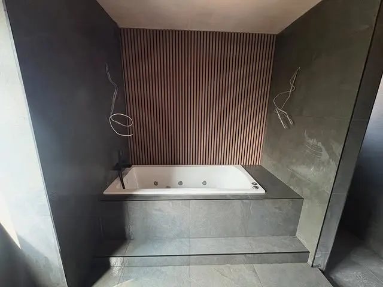
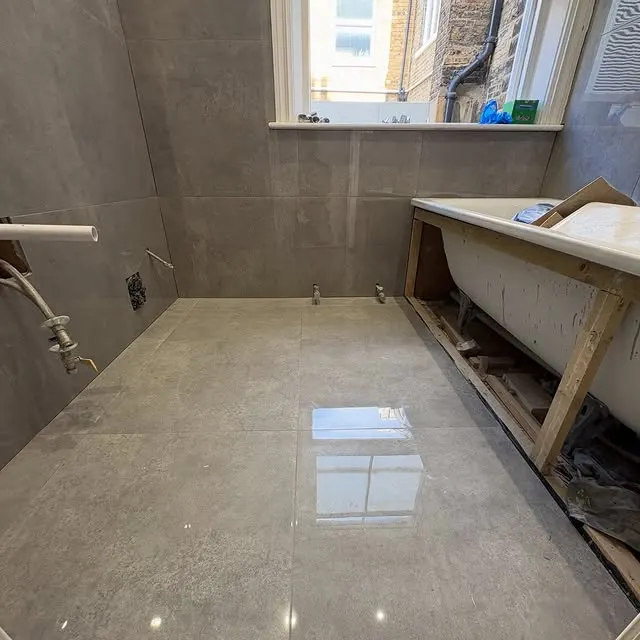
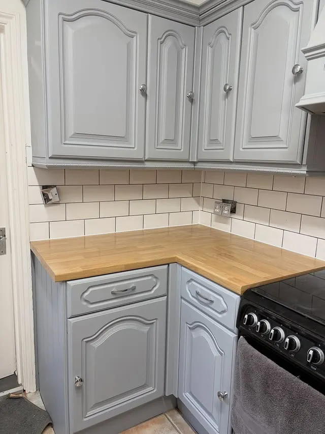
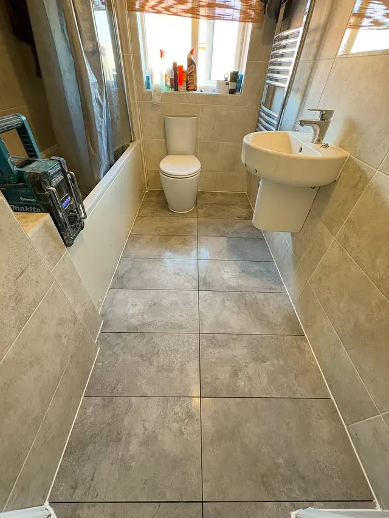
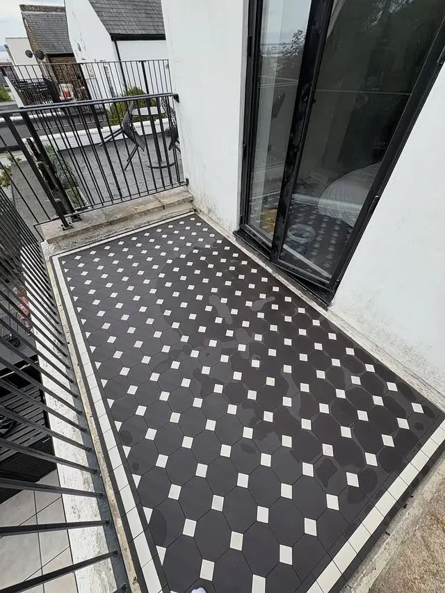
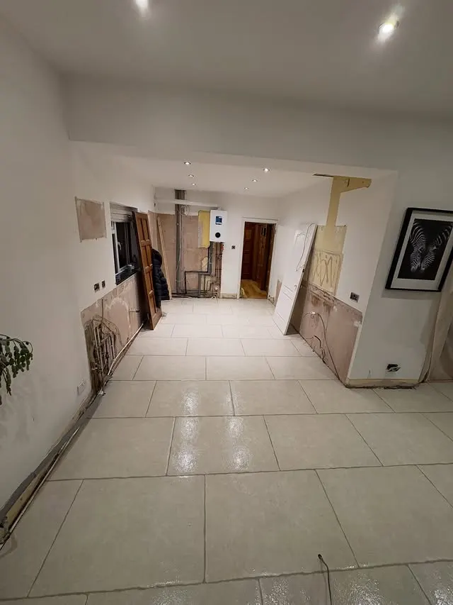

Greenhithe, Kent · Kent, London & Essex
Tiling done properly — big jobs and small ones.
Ty the Tiler offers domestic and commercial tiling from Greenhithe, Kent. As one recent post puts it: work is work, no matter how big or small.
Bathrooms, kitchens, floors, splashbacks and terraces — the gallery below is Ty’s own recent work.

What we do
Bathroom tiling
Full bathroom tiling, including large-format porcelain and waterproof wall panelling.
Kitchen tiling
Kitchen walls and floors, from splashbacks to hexagon and scallop feature tiles.
Floor tiling
Hallways, terraces and living-space floors in a range of tile sizes.
Repairs & small jobs
Small floor repairs and splashbacks — the little jobs that see a home through.
Recent work
Photos from our own Instagram — real jobs, not stock photos.





Get a quote
Message Ty the Tiler on Instagram @ty_the_tiler to ask about a job. No phone number is published in the business bio, so none is shown here.